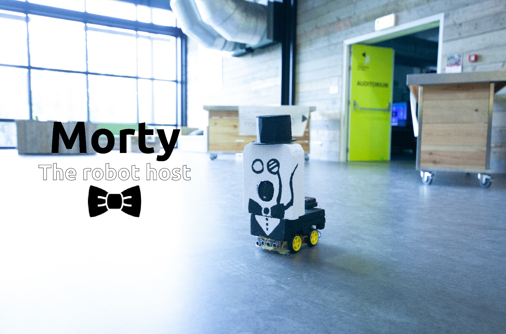

Dag 1
Vandaag zijn we begonnen met het bedenken met concepten. We hebben verschillende soorten mindmaps gemaakt. Daarnaast hebben we met elkaar gediscussieerd over de verschillende ideeën. Aan het begin was het moeilijk om op ideeën te komen en wisten we niet waar we ons op moesten focussen. De verschillende brainstorm momenten en mindmaps hebben we specifieker kunnen kijken naar dingen. We begonnen met veel verschillende ideeën en wisten we niet hoe we die moesten gaan maken. Uiteindelijk hebben we het ons makkelijkere gemaakt. Door met Chris te praten zijn we op een nieuw concept gekomen. Het concept heeft een beeld en een controller door de sensoren gebeurt er iets op het scherm. Dat hebben we verder uitgewerkt. Op het einde waren we niet tevreden over het concept. Er is afgesproken om voor de volgende dag nieuwe concepten te verzinnen of dingen die het huidige concept kan verbeteren.
Dag 2
Vandaag zijn we opnieuw begonnen met het bedenken van concepten. Na lange brainstorm momenten en mindmaps hebben we een nieuw concept bedacht. Maar voordat we begonnen hebben we onze scrumboard bijgewerkt. Er zijn een hoop dingen eraf gehaald en opnieuw ingedeeld. Nadat we het concept hadden bedacht heb ik samen met de groep de scrumboard opnieuw ingedeeld. Ik heb deze dag veel de leiding genomen om een begin te maken met het concept. Er zijn verschillende dingen uitgetest met de Arduino om te kijken of het werkte. Ik ben samen met Imke gaan kijken hoe het concept beter uitgewerkt kon worden. Samen hebben we een mindmap gemaakt om het concept meer te visualeren. Morgen zullen we beginnen met het uitwerken van het concept.
Dag 3
Vandaag zijn we begonnen met de ultrasensor werkend te krijgen, als je iets aanraakt dat er een geluid af gaat, de ultrasensor is gekoppeld met licht, de voice- recognitie doet het en als laast heb ik gewerkt aan de design voor de creature. Ik heb verschillende soorten schetsen gemaakt van het concept. Er zijn ogen en een mond toegevoegd aan de creature. Morgen zullen we het uitsnijden, maar vandaag zullen we de sensoren verder uitwerken. Ik heb geholpen met de ultrasensor werkend te krijgen samen met Thuis. Ik heb ook samen met Matej gekeken hoe we zijn code beter konden maken. We zijn bezig geweest om licht te kopelen aan beweging, dus als je het beweegt dan maakt de systeem ligt. Later hebben we er ook geluid aan toegevoegd.
Dag 4
Vandaag zijn we verder gaan werken aan het concept. We zijn naar de KIWI store geweest om wat spullen te gaan halen. Tijdens bouwen aan de arduino waren we er achter gekomen dat we wat spullen nodig hadden. We hebben een spieker en andere apparaat gekocht om de installatie verder uit te bouwen. Alleen in de middag merkte in dat de groep uit elkaar begon te gaan, iedereen werkte aan zijn eigen deel. Ik had alleen niet meer een idee wat we aan het doen waren, daarom heb ik de groep bij elkaar geroepen. Samen hebben we besproken om een nieuw concept te gaan maken. Het oude concept vond niet iedereen leuk meer om te gaan bouwen. We waren tegen ons zin iets aan het maken waardoor het een chaos werd. Na het brainstorm moment zijn we er nog steeds niet uitgekomen. We hebben een paar ideeën met de groep verdeelt en gekeken wat iedereen ervan vond. Het is alleen moeilijk omdat iedereen een eigen idee heeft over het concept en we willen alle sensoren die we hebben erin verwerken. Morgen gaan we beginnen met brainstormen en gaan we naar het scrumboard kijken wat er gedaan moet worden.
Dag 5
Vandaag zijn we begonnen met een nieuw concept te verzinnen. We hebben lang gediscussieerd, uiteindelijk heeft Matej zijn ideeën vertelt. Ik heb ook mijn ideeën verteld aan de groep. De reactie erop wat geweldig. Ze vonden mijn idee leuk om een soort ‘host’ te gaan maken die zichzelf en het HCI expositie introduceert. Verder hebben we ook ideeën van andere erbij toegevoegd en gekeken welke sensoren we nog hadden. Eén van de eisen van het concept was dat het moest rijden. We zijn eerst met de basis begonnen uit te werken en de auto laten rijden. De ultrasensoren hebben we erop gezet zodat de auto stopt als hij binnen 50 centimeter iets ziet. We zijn lang bezig geweest met de codes van de sensoren om het werkend te krijgen.
Mijn taak was om samen met Matej de code van de sensoren te maken. We hebben lang eraan gewerkt om het werkend te krijgen. Het was een lastige en lange code die we aan het schrijven was. Ook een code die we nog nooit eerder hadden gemaakt, het was daarom nog extra lastig. Het is uiteindelijk gelukt en we hebben de codes gekoppeld aan de auto. Casper heeft de code van de auto gemaakt en de auto in elkaar gezet. Verder heeft Thijs aan de stem gewerkt om het te laten praten. Na het weekend gaan we verder met de auto en de stem. We gaan erna verder kijken welke sensoren we erop willen hebben zoals licht en we gaan kijken of we de net kunnen laten bewegen.
Dag 6
Vandaag hebben we verder gewerkt aan de codes voor de auto om hem te laten rijden. De auto stopt binnen een bepaalde afstand als er iets voor hem staat. De codes worden aangepast om de auto te laten omdraaien. Ik heb samen met Matej aan deze codes gewerkt om het werkend te krijgen. Thijs heeft aan de voice gewerkt om hem te laten praten. De codes zijn alleen erg moeilijk te schrijven en dat kan nog wel even duren. Het is spannend of het gaat werken. De rest van de dag heb ik me meer op het design gewerkt van de robot. Ik heb piepschuim gesneden. Als eerst heb ik de body gemaakt van de auto en daarna het hoofd. Voordat ik dat ging doen heb ik schetsen gemaakt van de gaten. De schetsen heb ik gebruikt om de gaten op de goede plekken uit te snijden. Tijdens het schetsen heb ik gekeken waar de arduino en kabels zitten. Het snijden van het piepschuim was best lastig omdat het dik was. Ik had alleen een mesje die ik kon gebruiken. Het heeft ook iets langer geduurd voordat ik alles gesneden had. Morgen ga ik het hoofd nog meer uitsnijden en ga ik het verven.
Dag 7
Vandaag heb ik verder gewerkt aan het design van de robot. Eerst heb ik het hoofd verder uitgesneden tot het iets ronder was. Samen met de groep heb ik besloten om het hoofd en lijfje het gaan verven. We wisten alleen niet welke kleuren we moesten gaan kopen en hoe het eruit moest gaan zien. Ik heb ondertussen met Matej gekeken naar de rijdende auto omdat er iets mis was met de codes. Uiteindelijk zijn we er niet uitgekomen en heeft hij verder gewerkt. Ik was naar de Action gegaan om verf te gaan halen en verder te gaan kijken wat ze hadden. Er is zwarte en witte verf gekocht. Toen ik terug kwam heb ik samen met Matej gekeken naar het ontwerp. Het leek ons leuk om voor een klassieke robot te gaan. We gaan een pak schilderen met een strikje. Het hoofd zal eruit zien als een klassieke robot, zoals met een bril en misschien een hoed. Ik heb buiten het piepschuim geverfd en laten drogen. Nadat alles klaar was hebben we het binnen gelegd om het te laten drogen. Morgen ga ik ermee verder en zal ik het ontwerp verder uitwerken.
Dag 8
Vandaag ben ik verder gegaan met de design. Het hoofd en het lijfje zijn allebei geverfd. Het duurde alleen best lang voor dat het op was gedroogd. Ik heb meerdere lagen erop geverfd zodat het er mooiere uitzag. De verf had een uur nodig om steeds op te drogen, tussen door heb ik geholpen met de codes en de voice. Met het groepje hebben we drie keer de robot getest met het rijden. Uiteindelijk is dat gelukt en zijn er tussendoor een paar aanpassingen gemaakt om het beter te laten rijden. De code voor de voice is ook bijna klaar. Thijs is alle groepen langs geweest om de beschrijvingen van alle projecten te verzamelen. Die hebben we op de computer gezet en de stem omgevormd. De robot Morty heeft zijn eigen stem en zegt allemaal verschillende dingen. Ik heb nog een paar zinnen erbij verzonnen die gebruikt kunnen worden. Nadat ik klaar was met het verven was ik begonnen met het maken van de hoed. De hoed willen we gaan gebruiken om de sensor op het hoofd te verbergen. We zijn er achter gekomen dat we niet de juiste materialen hebben en geen hoed hebben kunnen maken. Morgen gaan we verder kijken hoe we dat gaan oplossen.
Dag 9
Vandaag zijn we begonnen als groepje om de robot af te maken. De robot kan rijden maar er zitten nog fouten in de codes. Dat is na een uur opgelost. De voice speaker had meer tijd nodig om werkend te krijgen. Uiteindelijk werkte het en Thijs heeft alle zinnen gemaakt. De zinnen zijn in de code gezet zodat de robot die kan zeggen. Ik ben bezig geweest met de houd van de robot. De hoed is gemaakt van karton en het duurder langer dan gedacht was. Het karton was erg sterk en moeilijk te knippen. Ik heb samen met Thijs het karton proberen lost te snijden met een mesje. Dat lukte gelukkig en daarna hebben we alles in de juiste vorm gesneden en gevouwen. Alle stukken zijn aan elkaar gelijmd en daarna zwart geverfd. Het verven duurder ook best lang omdat het tijd nodig had om te verven. Er moest achteraf ook een tweede laag erop geverfd worden. In de middag ontdekte we dat de twee arduino’s niet met elkaar wilde verbinden. De connectie is nodig om de robot te laten rijden en praten. Na een paar uur is het probleem opgelost en werd de robot goed. Morgen is het de laatste dag van het project week. We gaan dan de laatste dingetjes doen zodat de robot goed werkt.
Dag 10
Vandaag is het de laatste dag. Alleen komen we er net achter dat twee onderdelen kapot zijn. De DS kaart en het stuk dat op de arduino gaat voor het geluid. We proberen de hele dag al het te repareren, maar het is uiteindelijk niet geluk. Er is vandaag veel frustratie omdat het de laatste dag is voor de expositie. De expo begint om 16 uur en we moeten met een oplossingen komen. In de middag ben ik met het idee gekomen om het geluid met de telefoon te doen. We moeten de geluiden alleen achter elkaar zetten en op de telefoon zetten. De telefoon wordt dan aangesloten met de spieker zodat de robot toch dingen zegt. Het duurde alleen wat langer dan gedacht, een uur later nadat de expo begon kon onze robot praten. Het is uiteindelijk wel gelukt. Hij rijdt en praat uiteindelijk. Het heeft veel energie gekost deze overgelopen twee weken maar we zijn wel trost wat we gemaakt hebben. Tijdens de expo waren de bezoekers ook erg enthousiast over de robot.
Morty is een host robot dat zichzelf en alle projecten op het expositie introducteert. Hij staat bij de ingang zodat hij alle mensen iets kan
vertellen over elk project. Tussendoor maakt hij ook grapjes en vraagd hij dingen aan mensen. Hij rijd rond en zoekt de mensen, als hij
die gevonden heeft gaat hij erheen.

De project week is afgelopen en ik heb erg super veel van geleerd. Ik heb samen met mijn groepsgenoten een mooi project neergezet. Morty de host
robot is een super mooi project geworden waar ik erg trost op ben. Aan het begin ging het moeizaam en kwamen we maar niet op een concept. Na
een week brainstormen en mindmappen hebben we een super goed concept bedacht. Het proces erheen was erg stresvol en hard werken. Het was
ook erg lastig dat op de laatste dag dingen kapot gingen. Gelukkig kwamen we snel met een oplossing waardoor we toch een gaaf concept hebben
kunnen neerzetten. Ik heb veel geholpen met het bedenken van het concept. programmeren, testen en designen. Ik denk ook wel dat ik een goede
toevoeging was voor de groep. Ik heb ook veel geprobeert om de groep te laten samen werken en alles te laten bespreken, omdat ik toch merkte
in die twee weken dat iedereen zijn eigen weg op ging. Maar ik heb geprobeert om iedereen bij elkaar te houden. Samen hebben we goed samen gewerkt
en ik ben trots wat we hebben neergezet in twee weken.
De aftermovie van het project!